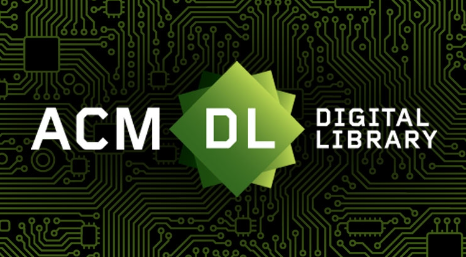

Selected Engineering Work
Projects focused on realtime systems, integrations, and practical tooling.

PUMA Interactive Selfie Booth
Interactive retail installation deployed in the PUMA NYC flagship store.
Touchdesigner handled the main experience while a Python service managed monitoring and runtime control.
WebSockets were used to synchronize communication between systems in realtime. Stability mattered more than anything else here because the installation was running continuously during store hours.
Challenges
- Maintaining stability during continuous public use
- Handling runtime recovery cleanly
- Synchronizing realtime application state
- Analytics monitoring

TidyTotals — Income & Expense Tracker
Database-driven finance tracking tool built to replace fragmented spreadsheets.
The project focused heavily on structuring the data cleanly and reducing friction in everyday use.
The UI was intentionally kept lightweight since the system is designed around frequent input and quick access.
Focus Areas
- Relational database structure
- Workflow-focused UI design
- Automation for repetitive tasks

FileMaker ↔ PHP Integration
Integration layer connecting internal FileMaker systems with PHP-based services.
The main challenge was consistency across connected systems. Once failures happen between services, problems can spread quietly.
Work involved API communication, validation rules, retry handling, and surfacing failures clearly.
Focus Areas
- Data synchronization
- API structure and validation
- Error handling and retries

Interactive Reel Animation System
Slot-machine inspired animation system built in Unreal Engine 4.
The project focused on making the movement feel responsive and natural rather than purely visual.
Custom dampening logic was used to control reel slowdown and settling behaviour.
Focus Areas
- Procedural animation logic
- Realtime UI behaviour
- Motion tuning and responsiveness
Publication

Sign Language Recognition using CNNs
Published October 2024.
Research exploring convolutional neural networks for visual sign language recognition, with a focus on providing immediate feedback to learners.
Awarded Best Communication Paper at Web4All 2024.
View Publication